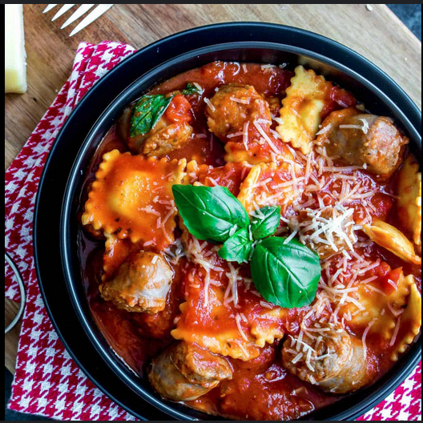

Spinach Ravioli with Chicken Sausage

Ingredients
- Frozen Spinach Ravioli
- Pasta Sauce of your choosing
- Chicken Sausage
- Seasoning of your choosing
Cookware
- Pot and Pot Lid
- Saucepan
- Large Strainer
- Wooden Spoon
- Cutting Board
- Knife
Instructions
- Take out your frozen ravioli, chicken sausage, and pasta sauce of choice.
- Heat up the necessary amount of water in a kettle or on your stove
- Put the water in your pot and wait for it come to a rolling boil
- While your water is boiling, add oil to your saucepan and heat it
- While your water and oil are heating, cut your chicken sausage and add it to the pan
- Once your water is boiled, add in the ravioli
- Once the ravioli is done cooking, turn off the stove and strain it
- Once the sausage is done cooking, place it on a plate to let it cool
- Pour your pasta sauce into the pot used to boil your ravioli
- Once the sauce is heated, add in the ravioli and sausage and mix
- Add seasoning to taste and enjoy!